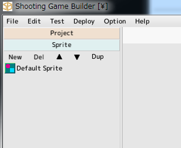
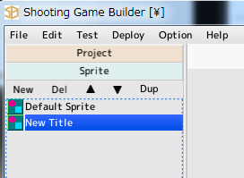
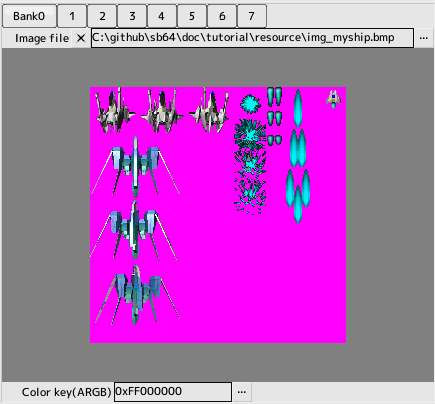
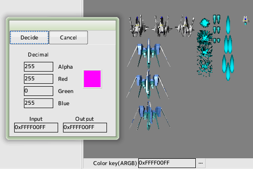
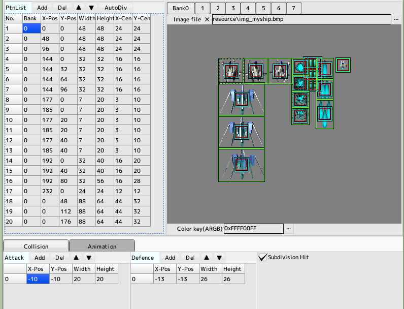

back to the original page
back to the original page

1. Create a sprite
A part that must be created when displaying any image is a sprite.
First we will create the sprites needed to create our own plane

Create new sprite
Open the project file created in the previous tutorial and click the sprite on the left
Then press the New button to create a sprite. Double-click on the 'New Title' that appears in the list to open it
The window you open becomes the sprite editing window
Change the 'New Title' in the name field to a more descriptive name (here it is 'MYSHIP')

Register image files
In the edit box to the right of the box labeled Image File, click the ... button on the right side of the edit box labeled Image File
Select 'resource/img_myship.bmp' in the tutorial folder
At this time, the button labeled Bank has 0 selected
Once the image file is registered, a preview will appear below it
If you want to register multiple image files, switch banks and then click... if you want to register more than one image file, switch banks and then click...
If you register an image file and no preview is displayed, it will be a non-supported format

Color Key Settings
The pink part of the image must be a transparent color, so specify that color in the color key
Type 0xFFFF00FF directly into the Color Key or... and enter the ARGB value of the color you want to make transparent in the color dialog
The background color is gray and can be changed in the editor settings

Pattern List Creation
Cut out the pattern from the image
When you add a pattern, one hit is also added at the same time
Enter all patterns and hit collision
Colors in Preview
Green Box... Pattern size
Blue Frame... Defensive collision size
Red box... Attack collision size
The XY center will be the center position when rotating and scaling
Please save the content so far
Ready to view itself
Proceed to the next tutorial
Back to top of page